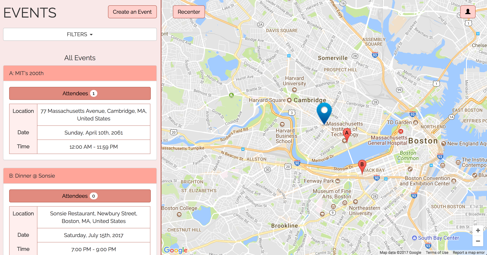
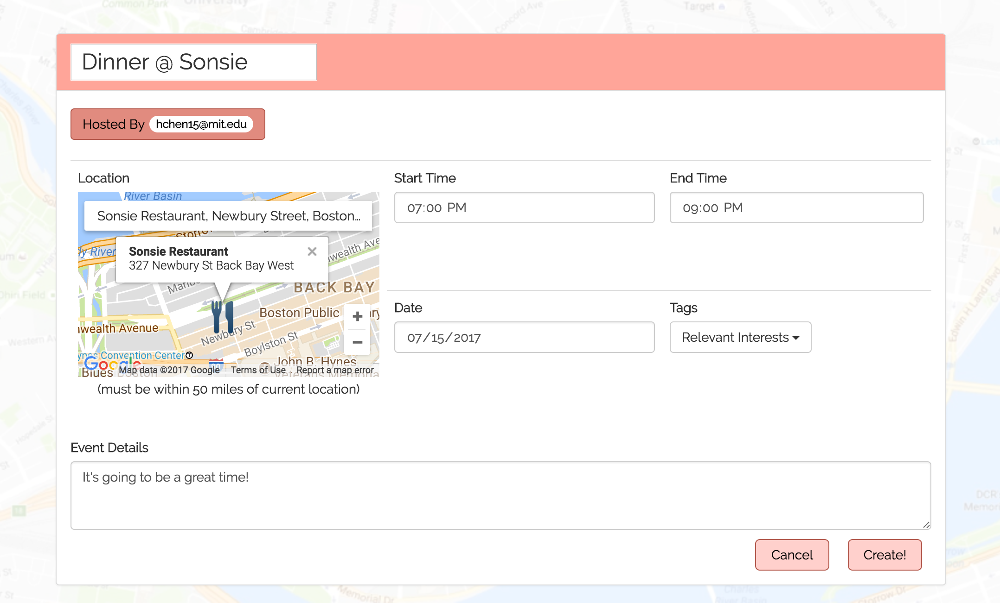
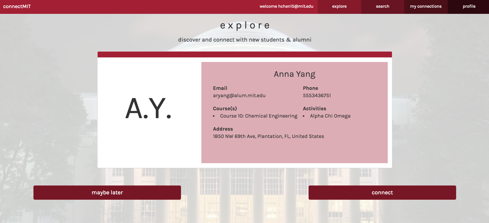
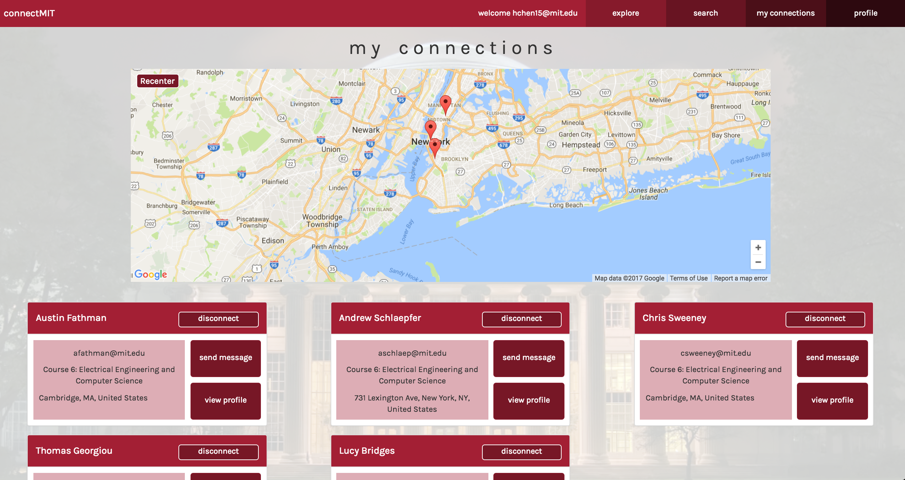
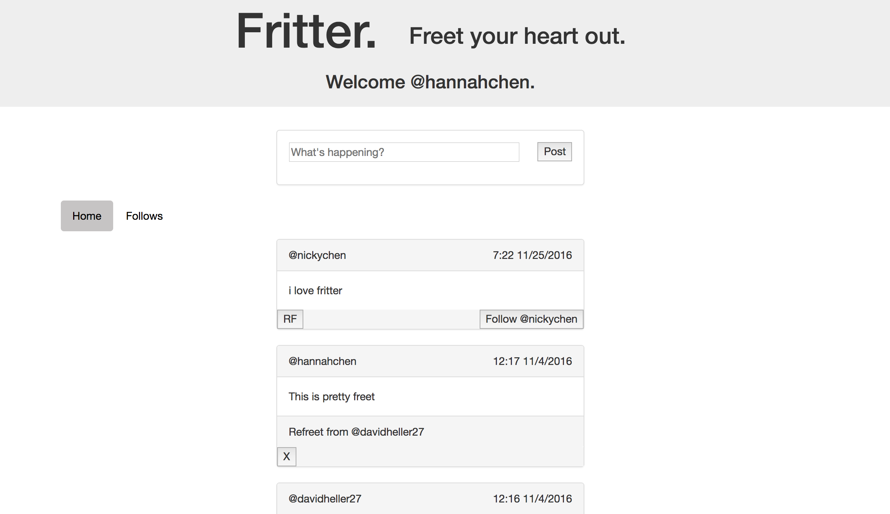

Rendezvous |
|---|
A convenient way to schedule shared events with other MIT students.Designed to build connections between students while away from campus on breaks or during internships. |
|  |
|  |
connectMIT |
Bridging the gap between MIT students and alumni by making networking simpler.Explore and discover alumni and students, search by category, and view personal connections. |
|  |
|  |
Fritter |
Like Twitter, but Fritter!Post a freet, follow other users, and re-freet to your heart's content. |
|  |